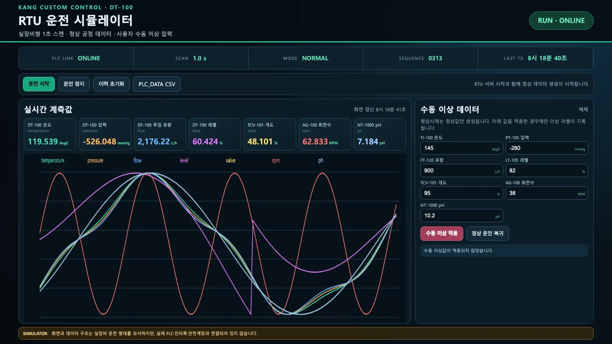
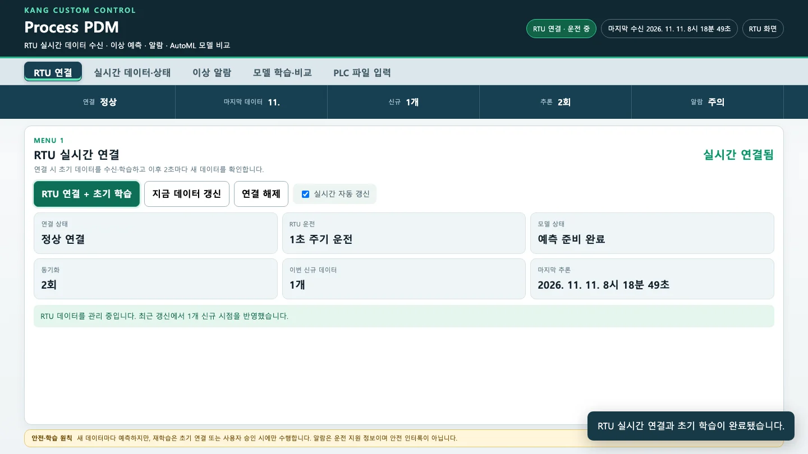
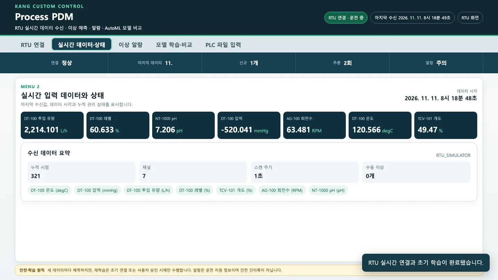
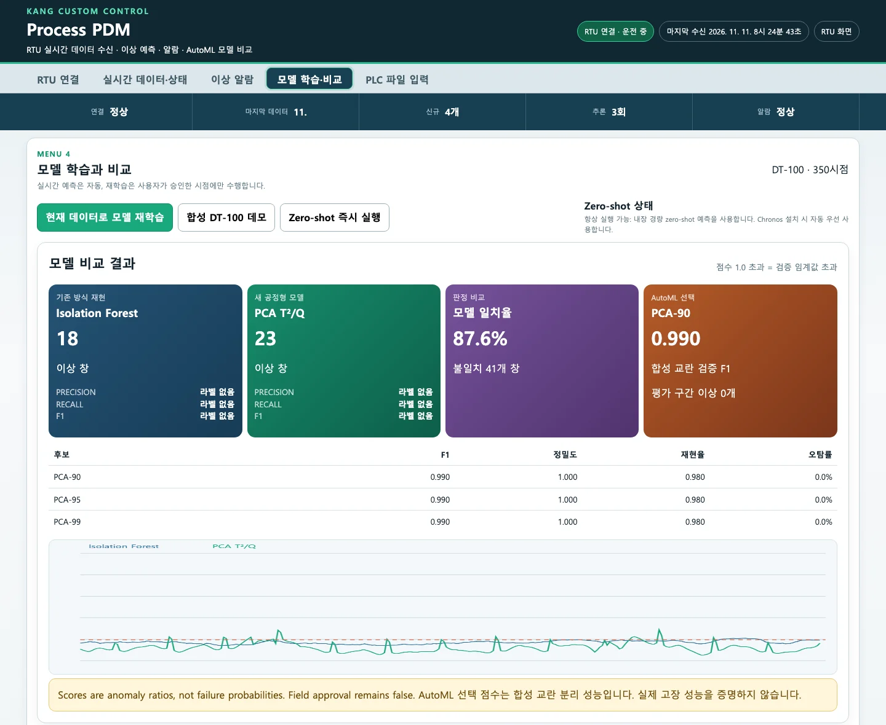

배포본의 두 프로그램, RTU 시뮬레이터(8776)와 PDM(8775)을 설치하고 실행합니다. PDM에서 「RTU 연결 + 초기 학습」을 누르는 순간 RTU에 쌓인 이력 전체로 두 모델과 AutoML 후보 여섯 개가 학습됩니다. 그 뒤로는 2초마다 새 데이터를 받아 판정만 하고, 다시 학습하지 않습니다.
무엇을 · 왜#
현장에서는 센서 값이 PLC나 RTU(원격 단말)를 거쳐 들어옵니다. 배포본은 이 흐름을 두 프로그램으로 나눴습니다.
| 프로그램 | 주소 | 하는 일 | 하지 않는 일 |
|---|---|---|---|
| RTU 시뮬레이터 | http://127.0.0.1:8776 |
반응기 DT-100의 일곱 값을 1초마다 한 시점씩 만듭니다. 켜자마자 정상 이력 300시점을 먼저 만들고, 최근 1,440시점(24분)까지만 보관합니다. 수동 이상값을 받고, PLC_DATA 형식 CSV로 내보냅니다 | 분석 |
| PDM | http://127.0.0.1:8775 |
RTU 이력을 받아 학습하고, 2초마다 새 데이터를 판정해 알람을 냅니다. PLC 파일도 읽습니다 | 설비 제어, 모델 파일 저장 |
두 프로그램은 HTTP로만 연결됩니다. PDM은 처음 연결할 때, 그리고 이후 2초마다 RTU의 /api/pdm-feed에서 보관 중인 이력 전체를 받아 옵니다. 따라서 RTU 대신 실제 PLC_DATA를 넣어도 같은 모델과 화면 흐름을 사용할 수 있습니다(6장).
따라 하기#
-
배포본 ZIP을 완전히 풀고 그 폴더로 이동합니다. Python 3.12가 있어야 합니다(
pyproject.toml이 3.12만 허용합니다).python3.12 -V # Python 3.12.x cd <배포본 폴더> ls src # …_core …_pdm …_rtu 세 패키지 -
프로그램을 설치합니다. 설치는 처음 한 번만 하면 됩니다.
Windows는
setup_windows.bat을 실행한 뒤run_all.bat을 실행합니다. 두 화면이 브라우저에 자동으로 열립니다.setup_windows.bat 은 Python 위치가 정해져 있습니다
스크립트가
C:\projects\sdk\python-3.12\python.exe로 가상환경을 만듭니다. 그 위치에 Python이 없으면.venv가 만들어지지 않습니다. 이 경우py -3.12 -m venv .venv로 직접 만든 뒤 스크립트를 다시 실행하세요.macOS·Linux에서는 배포본의 설치 명령(
pip install -e ".[workflow,web]")이 실패합니다. 패키지 묶음에 포함된pywin32==311이 Windows 전용이기 때문입니다. 나머지 패키지를 같은 버전으로 직접 설치합니다(이번 실행에서는 30초쯤 걸렸습니다).python3.12 -m venv .venv .venv/bin/python -m pip install "numpy==2.3.5" "scikit-learn==1.8.0" "joblib==1.5.3" \ "openpyxl==3.1.5" "xlrd==2.0.2" "Flask==3.1.3" .venv/bin/python -m pip install --no-deps -e . .venv/bin/python -m unittest discover -s tests -v # 6개 모두 ok -
두 프로그램을 실행합니다. macOS·Linux에서는
launcher.py가 Windows 경로(.venv\Scripts\python.exe)를 찾으므로 쓰지 않고, 패키지를 직접 실행합니다.RTU=$(basename src/*_rtu); PDM=$(basename src/*_pdm) .venv/bin/python -m $RTU & # http://127.0.0.1:8776 .venv/bin/python -m $PDM & # http://127.0.0.1:8775RTU는 켜는 순간부터 정상 데이터를 만들기 시작합니다. 포트는 코드에 고정되어 있어 바꿀 수 없습니다. 다른 프로그램이 8775나 8776을 쓰고 있으면 먼저 끄세요.
-
RTU 화면(
http://127.0.0.1:8776)을 엽니다. 오른쪽 위가 「RUN · ONLINE」이고, 일곱 카드의 값이 1초마다 바뀝니다.- 위쪽 줄:
PLC LINK ONLINE,SCAN 1.0 s,MODE NORMAL,SEQUENCE(보관 중인 시점 수),LAST TX(마지막 시점의 시각) - 버튼: 「운전 시작」「운전 정지」「이력 초기화」(정상 300시점으로 되돌리고 정지합니다), 「PLC_DATA CSV」(보관 중인 이력을 내려받기)
- 그래프: 최근 180시점입니다. 채널마다 자기 최솟값~최댓값으로 늘려 그리므로, 선의 높이를 채널 간에 비교하면 안 됩니다.
- 오른쪽 「수동 이상 데이터」: 일곱 칸에 이상값이 미리 들어 있습니다(3장).
정지·초기화 뒤 1초 안에 다시 시작하지 마세요
「운전 정지」나 「이력 초기화」를 누르고 1초 안에 「운전 시작」(또는 「수동 이상 적용」)을 누르면, 데이터를 만드는 작업이 둘로 늘어 1초에 두 시점씩 쌓입니다. 중지하려던 작업이 1초 동안의 대기를 마치기 전에 다시 시작 신호를 받기 때문입니다. 이번 실행에서 두 요청을 연달아 보냈을 때 확인했습니다(1.5초 뒤에 보내면 정상). 이미 이런 상태가 되었다면 RTU 프로그램을 껐다 켭니다.

RTU 시뮬레이터. 위쪽 상태 줄, 운전 버튼, DT-100 일곱 채널 카드와 최근 180시점 그래프, 오른쪽의 수동 이상 데이터 입력칸 - 위쪽 줄:
-
PDM 화면(
http://127.0.0.1:8775)을 엽니다. 메뉴는 다섯 개이며, 그 아래 고정된 상태 줄에 연결·마지막 데이터·신규·추론·알람이 나옵니다. 아직은 「RTU 연결 안 됨」, 알람 「대기」입니다.상태 줄의 「마지막 데이터 11.」
한국어 브라우저에서는 상태 줄의 「마지막 데이터」 칸에 시각 대신 날짜의 일부(예:
11.)가 찍힙니다. 화면 코드가 날짜를 공백 기준으로 나눈 뒤 두 번째 부분을 사용하기 때문입니다. 정확한 시각은 오른쪽 위 「마지막 수신」과 「실시간 데이터·상태」 메뉴의 「데이터 시각」에서 봅니다. -
RTU를 켠 지 20초쯤 지나면 「RTU 연결」 메뉴에서 RTU 연결 + 초기 학습을 누릅니다. 곧 「RTU 실시간 연결과 초기 학습이 완료됐습니다」가 뜹니다. 버튼을 한 번 누르면 다음 과정이 차례로 진행됩니다.
단계 이번 실행 값 RTU 이력 전체 받기 321시점 × 7채널 원시 시점을 시간 순서대로 나누기(특징을 만들기 전에 나눔) 학습 192 · 검증 64 · 평가 65 20시점 창으로 특징 만들기 학습 173 · 검증 45 · 평가 46개 창 기존 방식 학습 온도·압력 특징 10개로 Isolation Forest 새 공정형 모델 학습 일곱 채널 특징 35개로 PCA, 설명 분산 95% → 주성분 8개 임계값 검증 45개 창 점수의 99% 지점 AutoML 여섯 후보 비교(4장) 
연결 직후의 「RTU 연결」 메뉴. 연결 상태 정상 연결, RTU 1초 주기 운전, 모델 상태 예측 준비 완료, 동기화 횟수와 마지막 추론 시각 -
「실시간 데이터·상태」 메뉴를 엽니다. 일곱 채널의 최신값과 수신 데이터 요약(누적 시점 321, 채널 7, 스캔 주기 1초, 수동 이상 0개)이 보입니다. 「실시간 자동 갱신」이 켜져 있으면 2초마다 새 시점을 받아 같은 모델로 판정만 합니다. 상태 줄의 「추론」 횟수가 2초마다 하나씩 늘어납니다.

실시간 데이터·상태 메뉴. 일곱 채널의 최신값과 누적 시점·채널·스캔 주기·수동 이상 수 -
「모델 학습·비교」 메뉴를 엽니다. 연결할 때 학습한 결과가 카드 네 장과 AutoML 후보 표, 점수 그래프로 나옵니다. 아래 화면은 다른 실행에서 연결하고 30초쯤 지나 이력이 350시점이 되었을 때입니다.
카드 화면 값 읽는 법 기존 방식 재현 · Isolation Forest 이상 창 18 지금 이력 전체(350시점 → 331개 창) 가운데 점수가 1.0을 넘은 창 수 새 공정형 모델 · PCA T²/Q 이상 창 23 같은 기준 판정 비교 · 모델 일치율 87.6%, 불일치 41개 창 두 모델이 같은 판정을 낸 창의 비율 AutoML 선택 PCA-90, F1 0.990, 평가 구간 이상 0개 4장 앞의 세 카드는 2초마다 늘어난 이력 전체를 같은 모델로 다시 판정한 결과라 숫자가 계속 바뀝니다(첫 실행에서는 연결 직후 IF 16·PCA 17, 일치율 89.1%였습니다). AutoML 카드와 후보 표는 연결할 때 한 번 계산한 그대로입니다. 후보 표는 세 줄만 보이고, 표 안에서 아래로 스크롤해야 나머지 세 줄이 보입니다. PRECISION·RECALL·F1이 「라벨 없음」인 것은 이력에 이상 라벨(1)이 하나도 없기 때문입니다. 이상을 넣은 적이 없는데도 이상 창이 십여 개씩 나오는 이유는 5장에서 다룹니다.

모델 학습·비교 메뉴의 결과. 네 카드(IF 이상 창 18, PCA 23, 일치율 87.6%, AutoML PCA-90 0.990), AutoML 후보 표의 위 세 줄, 두 모델 점수 그래프와 임계값 1.0 점선
무엇이 남고 무엇이 사라지나#
| 무엇 | 어디 | PDM을 다시 켜면 |
|---|---|---|
| RTU 이력(최근 1,440시점) | RTU 메모리 | RTU를 다시 켜면 정상 300시점부터 새로 시작합니다 |
| 학습한 모델, 비교 결과 | PDM 메모리 | 사라집니다. 다시 연결해 학습해야 합니다 |
| PLC_DATA CSV | 「PLC_DATA CSV」를 누를 때 내려받기 | 파일로 남습니다 |
| 로그 | Windows 실행기의 runtime/*.log |
파일로 남습니다 |
배포본은 모델을 파일로 저장하지 않습니다. 교육 자료의 「모델 파일」「검증 점수가 가장 좋은 모델을 저장」은 아직 구현되지 않은 부분입니다.
확인 문제#
-
macOS에서 배포본의 설치 명령을 그대로 실행했더니
No matching distribution found for pywin32==311이 나왔습니다. 왜 그런가요? 어떻게 해야 하나요?정답
workflow묶음에 Windows 전용 패키지pywin32가 들어 있어서입니다. macOS·Linux에는 이 패키지가 없습니다. 나머지 패키지(numpy, scikit-learn, joblib, openpyxl, xlrd, Flask)를 같은 버전으로 직접 설치하고pip install --no-deps -e .로 프로그램을 등록합니다.pywin32는 Windows에서 구형 XLS 파일을 엑셀로 열 때만 쓰고, 없으면xlrd로 읽습니다. -
연결할 때 321시점을 받았습니다. 학습·검증·평가는 각각 몇 시점인가요? 특징을 만들기 전에 나누는 이유는 무엇인가요?
정답
60%·20%·나머지로 나눠 192·64·65시점입니다(소수점 아래는 버립니다). 20시점 창은 이웃한 창과 19시점이 겹칩니다. 특징을 먼저 만들고 나누면 경계 근처 검증 창에 학습 데이터가 섞여, 검증 점수가 실제보다 좋아 보입니다. 원시 시점을 먼저 나누고 구간마다 따로 창을 만들면 데이터가 섞이지 않습니다.
-
PDM을 껐다 켜고 「실시간 데이터·상태」를 보니 비어 있습니다. 모델은 어떻게 되었나요?
정답
사라졌습니다. 모델과 비교 결과는 PDM 메모리에만 있고 파일로 저장되지 않습니다. 「RTU 연결 + 초기 학습」을 다시 누르면 그 순간 RTU에 쌓여 있는 이력으로 새로 학습합니다. 그 이력에 이상이 들어 있으면 문제가 됩니다(5장).